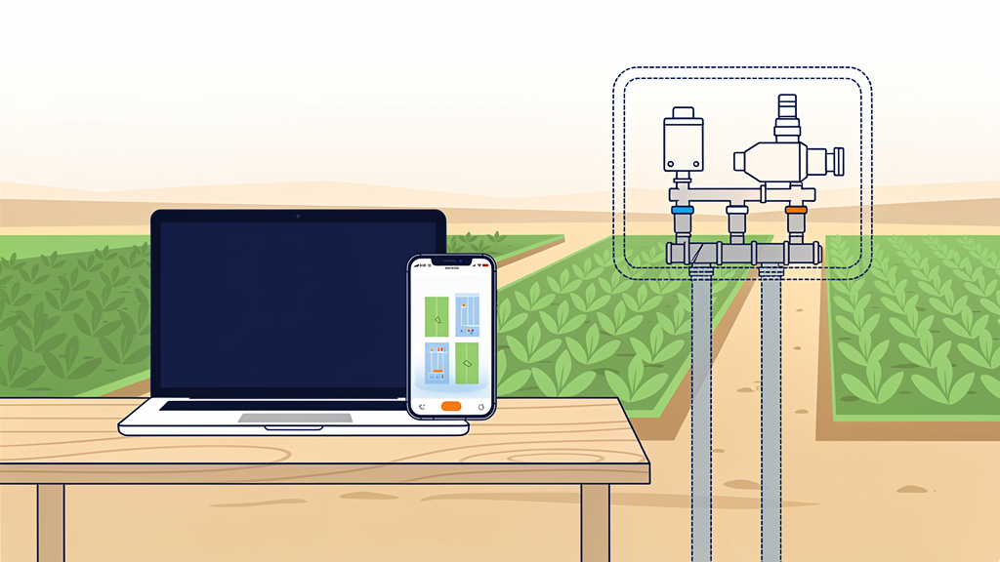

A Mac stands in for the reference build, so Agal One AGRI can be tested on the phone against the real cloud — no bench, no wiring, nothing pretended on the cloud side.

The hardware in the dotted outline does not exist. The laptop answers for it: valves open, the pump starts, water "flows" — and the phone sees exactly what it would see on a farm.
The Agal One agent (agal-one-agent 0.2.1) running on a Mac with blocks.simulated_io: true. Its ports live in memory; a small "bench physics" thread answers them the way the plumbing would. Everything else — MQTT, the ingress, program pull and acknowledgement, alerts — is the production path to agal-one-prod.
The P4 exit test: R-1 to R-8, R-19, R-22, R-23, R-25, R-27, R-31 and R-32 of the build baseline, run on the phone before any hardware exists. It is not a substitute for the bench of P8 — dry-run, phase loss and the safe-state relay stage still need real parts.
The phone talks to the instance the way it always does; the instance talks to the laptop the way it talks to a Raspberry Pi in a pump house. The laptop node is a normal node document in the account, with a normal program, acknowledged and executed by the normal runtime.
The rule of the laptop node. If something works here, the cloud side and the app side are proven. If something works only here, it is the physics that flatters it — dry-run cutoff, phase loss and the safe-state relay stage are judged on the bench of P8, never on the laptop.
Valve open + pump on → flow. Five seconds after a plot's valve output is energised with the pump relay on, that plot's flow switch reads flowing. It clears as soon as the valve closes.
Pump relay on → current. Two seconds after the relay closes, the pump's current sensor reads its rated current (a nominal 4.5 A while the rating is still "learn on first run"), with a little noise; 0 A when the relay opens.
Three-phase pumps. All three current inputs carry current and all mains-sense inputs read present, so the three-phase program runs clean.
Nothing else. Tank levels, wall switches and sensors keep their last written value. The physics is deliberately small: it exists to make R-7, R-8 and R-9 observable, not to model a farm.
The phone sends runPlot; the instance publishes the command; the laptop's runtime opens the plot's valve and lets the default Node Automation Block do the rest. The timings below are the program's and the physics' — the same numbers you will read on the phone.
settings.valve_energise_seconds in the NAB — the sequence rule start_pump.current_delay.flow_delay; the flow-switch program then holds it 3 s (flow_hold) before reporting flowing.settings.rated_current; 0 = 4.5 A nominal.The runtime ends the plot: the pump relay opens first, the valve closes after it, the flow clears within a couple of seconds and the current reads 0 A. The phone's history shows the command with who sent it; the plot card returns to "Closed" or "Next … " when a schedule exists.
The node, its cards and the field are created on the phone like any other; the laptop only needs the node's identity and the broker to connect to.
Assets → Nodes → Add node. The instance creates the node document with its auth token and topics.
Open its pin map and add a few pins: GPIO outputs for the pump and each valve, GPIO inputs for the flow switches, one analog input for current. Any numbers — nothing is wired.
One Pump, one Valve per plot, one Flow Switch per plot. On each card: Edit → Link to node, pick the laptop node and a pin per port.
Linking installs the card's default program on those ports; the card shows Program: Installed.
Open the field's Layout, tap the pencil, place the pump, the valves and the flow switches. Select a plot → Design: choose its valves and its flow switch (or mark it a hand valve). Select the pump → Design: phase, rated current, safe state.
Save: the program is built from the design and written — Pending on node until the laptop pulls it.
Write config.yaml as below and start the agent. It connects, pulls the program, acknowledges it — the badge turns Applied · v1 — and runs it. Open http://127.0.0.1:8765/: the bench page (next pages).
Or skip steps 1–3: npm run seed:laptop-node -- --uid … in the backend repo creates all of it under your account and writes this file.
# config.yaml — laptop node (never on a farm node) node: uid: <nodeUid from Assets → Nodes> name: Laptop node auth_token: <the node document's authToken> mqtt: broker: <instance broker host> port: 8883 tls: true username: <broker user> password: <broker password> telemetry: ingress_url: https://asia-south1-agal-one-prod.cloudfunctions.net/telemetryIngress blocks: enabled: true simulated_io: true # in-memory ports + bench physics state_dir: ./state pins: [] # simulated: no GPIO is touched # then, from Agal/daemon/agal-one-agent .venv/bin/pip install -e . .venv/bin/agal-one-agent --config ./config.yaml
The broker credentials are the instance's MQTT credentials, held by the founder; they are never written into a repository or this document. The first log lines say blocks.simulated_io is ON — ports are simulated and BENCH PHYSICS.
Each line is a requirement of the build baseline, the budget it sets and what the laptop node makes visible. The history sheet keeps the record.
| Req. | Do this | Expect | Budget |
|---|---|---|---|
| R-1 | Field with two plots, pump + valves + flow switches placed; a valve assigned to its plot. | The plot's Design shows its valve; the layout node label reads the plot's name. | — |
| R-2 | Open the field from the field card. | One Layout button; live view with state, next run, badges, program status; pencil opens editing. | — |
| R-3 | While a plot runs, pencil → select its valve → delete. | Refused with a message naming the plot being watered. | — |
| R-4 / R-5 | Link a valve to a pin twice; link beyond the pins configured. | The pin picker offers only free pins of the right protocol. | — |
| R-6 | Change the pump's rated current; save. | settings.rated_current in the pump program; the node re-acknowledges. | ≤ 30 s |
| R-7 | Tap Run 30 min on a plot. | Valve open; pump on after the energise delay; Stop turns the pump off before the valve closes; a pump toggle with no valve open is refused. | pump ≤ 5 s |
| R-8 | Same run. | The plot reads Open · flowing; the flow glyph turns blue; it clears after Stop. | ≤ 15 s (≈ 8 s here) |
| R-9 | Same run, open the pump card. | Current at the rated value, Running; 0 A after Stop. | ≤ 10 s |
| R-19 | Stop the laptop agent, save any design change, start it again. | Pending on node while stopped, Applied with the new version after restart. | ≤ 30 s |
| R-22 | Open the node program sheet. | The default rules are listed; each is editable; three are marked protection. | — |
| R-23 | Toggle the pump card directly while a run is on. | An interruption row in history; the plot card shows the badge. | ≤ 10 s |
| R-25 | Add a schedule two minutes ahead (30 min, every day). | The plot shows Next today …; at the time, it runs without the phone; history shows the schedule. | start ≤ 1 min |
| R-27 | Watch the live view during a run. | Glyphs, plot fills and labels change as the node reports. | ≤ 10 s |
| R-28 | In the program text, set max_run_seconds to 120; run a plot for 10 min. | At 2 min the run ends, valves close; banner and push: "Pump stopped: maximum run time reached". | ≤ 60 s |
| R-31 / R-32 | Ask Assist, in Tamil, to run a plot / add a schedule. | A confirm card in the chat; on confirm the plot runs / the schedule appears in the program. | — |
Faults are on the next page. Dry run (R-11), a lost phase (R-13), the safe state and a node outage (R-14, R-21), flow faults (R-23) and node offline (R-28) are provoked from the bench page on the Mac.
The agent serves a page on the Mac at http://127.0.0.1:8765/ (loopback only, only with simulated_io). It shows the ports, the program and the plots live, and its buttons make the physics misbehave — each one turns a "bench only" line into a phone test.
A mock of the page: plots with their fault buttons, the ports as the program sees them, node-level faults, and the journal of what the physics did.
| Req. | Press | On the node | Expect on the phone | Budget |
|---|---|---|---|---|
| R-11 | Dry run (current collapses) | The pump's current falls to 30 % of the running value. Needs a learned baseline: run a plot for 15 s first. | The pump's own program cuts the relay; valves close; alert "Pump stopped: running dry"; the pump card shows Dry run. | cut ≤ 8 s |
| R-13 | Lose phase R / Y / B | That phase's current reads 0 and its mains sense reads absent. Three-phase pumps only — the seeded pump is single-phase; add a three-phase pump card to test. | Phase-loss cutoff while running; with the pump stopped, a start is refused. | ≤ 5 s |
| R-23 | No flow when open · Flow while closed | The plot's flow switch is held off while its valve is open, or on while it is closed. | "valve open but no flow" after 20 s; "water flowing while the valve is closed" after 10 s; one push each. | ≤ 60 s |
| R-14 / R-21 | Node outage 30 s | The runtime stops with safe state, the heartbeat goes silent; then the persisted program reloads, the boot pass runs, an interrupted run resumes. | Pump off at once (safe state off); after the node returns, history shows the run resumed (within 15 min) or cut short; the badge stays Applied. | ≤ 10 s |
| R-28 | Offline 200 s | No heartbeat and no MQTT for 200 s; the program keeps running on the node. | "Node offline" push and the red node chip; green again when it reconnects. | ≤ 3 min |
| You see | It means | Do |
|---|---|---|
| Node chip is red | No heartbeat for three minutes. | Is the agent running and connected? The log shows the MQTT connect; broker credentials or the node's auth token are the usual cause. |
| Pending on node for more than a minute | The laptop has not pulled or has rejected the program. | Read the agent log: getProgram and the compile result. A rejected program shows the reason on the badge. |
| "No program yet" | The layout has linked cards but nothing was designed. | Pencil → select a plot → Design → Save. The program is built from the design. |
| "Not designed yet" on a plot | The plot has no valves or flow switch assigned. | Design the plot; a hand valve counts as designed. |
| Run is disabled on a plot card | No control access, a hand valve, the node offline, or the plot undesigned. | Check the role on the valve cards (controller or above), the node chip, the design. |
| "This plot is not in any node program yet" | The design was saved but the program write failed or is stale. | Save the layout again (rebuilds the program); check the alert shown after saving. |
| Flow never shows | The plot's flow switch is not the one in its design, or the pump relay never closed. | Design → flow switch; then open the pump card and check relay / the energise delay. |
| "Pump stopped: no valve open" | The protection rule fired: the pump was on with every valve closed. | Expected when the pump is toggled directly; run a plot instead. |
| The program text editor refuses a save | A validation error (unknown variable, a rule naming another node's asset, a missing plot). | The issue names the path and the rule; fix or remove the rule. |
Never set simulated_io on a farm node. The agent logs a warning at start and the physics thread announces itself; a node reporting flow with no water is the sign that someone did. The flag lives only in the laptop's config file, never in the fleet provisioner.
The laptop node writes ordinary production data — a node, cards, plots, programs, events. Delete the node and its cards when the test is over, or keep it as the demo farm; either is fine, but decide.
--offlineagal-one-agent-sim127.0.0.1:8765blocks.bench_port changes the port.LAPTOP_NODE.md